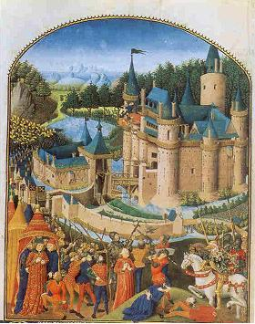
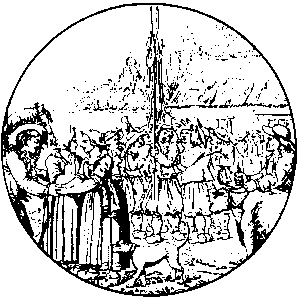
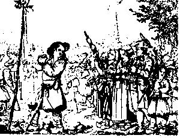

La Filleule de Du Guesclin
Du Guesclin's Godchild
Dialecte de Tréguier
|
- puis dans l'édition 1845 du Barzhaz Breizh. Chez Pitre-Chevalier, l'héroïne est appelée "Loïzaïk" (Louisette); elle devient Marc'haridik dans le Barzhaz. Le "pardon du Guéodet" mentionné chez Pitre-Chevalier et dans l'édition de 1845 du Barzhaz devient "le pardon de Saint-Servet" dans celle de 1867. Francis Gourvil suggère qu'il pourrait s'agir de Naïk de Follezou , la chanteuse de Lez-Breiz. La première de ces versions est effectivement attribuée, dans une note page 47 à une chanteuse de Trégourez, près de Leuhan, mais elle se prénomme Katel . Cf. Klemmgan Itron Nizon Il ressort de l'examen de ces versions - que l'on trouvera sur la page bretonne consacrée à ce chant -, qu'au moins un de ces textes à trait à l'assaut d'une forteresse anglaise par Duguesclin . Mais il s'agit du château de Pestivien , comme, semble-t-il dans le chant suivant et NON CELUI DE TROGOFF! Le nom du traitre est partout "Rosmelchon" et le prénom "Roger" que le collecteur sait être celui de Roger David ou Davy , le gouverneur de Pestivien n'apparaît que dans des vers visiblement remaniés. On ne sait dès lors que penser, pour ne pas utiliser de termes discourtois, de la note que La Villemarqué annexe au chant du Barzhaz: "Ainsi l'Anglais...du château de Trogoff est appelé Thuomelin par les chroniqueurs du temps, tandis que le nom de Roger-son ou fils de Roger, que lui donne la ballade [!], paraît désigner l'aventurier Roger, défenseur de Pestivien, [qui] fut fait prisonnier par Duguesclin". Les informations sur ces événements dont disposait La Villemarqué étaient tirées d'un ouvrage paru en 1839, la « Chronique de Bertrand du Guesclin du trouvère Cuvelier» , publiée par E. Charrière par l'imprimerie de l'Institut. Il s'agit d'un long poème de 23.000 vers écrit par un Picard, nommé Cuvelier (que Don Morice appelle Trueller ) pour l’ »amour [en mémoire] du roi Charles V » (qui régna de 1364 à 1380). Les épisodes de Pestivien et Trogoff correspondent aux vers 2944 -3430 (Trogoff est appelé "Turgot") de ce poème dont La Villemarqué cite 2 passages dans les "notes" qui suivent le "Vassal" « Qu’à Guingamp est venu… quand il les a ouïs » (vers 2949 à 2958) et « Quand furent apprêtés … arbalétriers devant « (vers 3038 à 3041). Dans la préface du livre de Charrière, il est dit que ce texte est connu par les « débris d’un texte du 16ème siècle dont les lacunes sont comblées par une main moderne » et qu’il est conservé à la bibliothèque Saint-Vincent du Mans sous le n° 1719. - par Luzel: "Gwerzioù" 1, "Rozmelchon" (Plouegat-Guerrand, 1863; Duault, 1863; Plouaret, 1867), "Janedik ar Rouz" (Plouaret, 1848; Duault, 1868?), "Markiz Trede" (Tregrom, 1854), "Marivonig" (Plouaret, 1849), "Fanchik Morvan" (Guerlesquin, 1868?). - par De Penguern: T. 90 "Rosmelchon" - par Yves Lamer (1814-1879) qui fut 21 ans instituteur à Ploumilliau. Il réunit 15 chants destinés à l'enquête Fortoul. Ils se trouvent réunis au fonds Luzel à la Bibliothèque de Rennes. Son nom est cité par A. Le Braz dans Sonioù 1890: "Rosmaelchon" (l'héroine est Marharid Jorj). |
 |
- then in the 1845 edition of Barzhaz Breizh. In Pitre-Chevalier's book, the heroïne's name is "Loïzaïk" (Louisette); it is Marc'haridik (Maggie) in the Barzhaz. The "Pardon of Guéodet" mentioned by Pitre-Chevalier and the 1845 Barzhaz edition becomes "the Pardon of Saint-Servet" in the 1867 edition. Francis Gourvil suggests that she could be identical with Naïk from Follezou , who sang part of "Lez-Breiz". The first of these versions is actually ascribed in a note page 47 to a singer from Trégourez, near Leuhan, but her name is Katel. Cf. Klemmgan Itron Nizon It appears from the examination of these versions - which will be found on the Breton page dedicated to this song -, that at least one of these texts relates to the assault of an English fortress by Duguesclin . But like in the next song , this fortress is, apparently, Pestivien castle, and NOT TROGOFF! The name of the traitor is everywhere "Rosmelchon" and the first name "Roger" that the collector knows to be that of Roger David or Davy , the governor of Pestivien appears only in visibly reworked verses. The note that La Villemarque annexed to the song in the Barzhaz is therefore puzzling, to say nothing more offensive: "Thus the English ruler ... of Trogoff castle is called Thuomelin by the chroniclers of the time, while the name of Roger-son or son Roger, what gives him the ballad [!] , seems to designate the adventurer Roger, defender of Pestivien, [who] was taken prisoner by Duguesclin ". Information on these events, available to La Villemarqué, was taken from a work published in 1839, the "Chronicle of Bertrand du Guesclin by minstrel Cuvelier" , edited by E. Charrière and published by the printer appointed by the Institut de France. It is a long poem of 30,000 lines which a named Cuvelier, a native of Picardy (whom Dom Morice calls Trueller ) wrote "for the sake [to honour the memory] of King Charles V" (who reigned from 1364 to 1380). The Pestivien and Trogoff episodes are addressed in lines 2944 to 3430 of this poem (Trogoff is called "Turgot"). La Villemarqué quotes 2 excerpts in the "notes" appended to song "Le Vassal": "Who repaired to Guingamp ... when he heard of them" (lines 2949 to 2958) and “They then prepared ... with crossbowmen in front” (lines 3038 to 3041). As stated in the preface to Charrière's book, this poem was passed to us as via "remains of a 16th century text, the gaps of which were filled by a modern hand" . It is preserved in the Saint-Vincent library, in Le Mans (item n ° 1719).. - by Luzel: "Gwerzioù" 1, "Rozmelchon" (Plouegat-Guerrand, 1863; Duault, 1863; Plouaret, 1867), "Janedik ar Rouz" (Plouaret, 1848; Duault, 1868?), "Markiz Trede" (Tregrom, 1854), "Marivonig" (Plouaret, 1849), "Fanchik Morvan" (Guerlesquin, 1868?). - by De Penguern: T. 90 "Rosmelchon". - by Yves Lamer (1814-1879) who was a teacher at Ploumilliau for 21 years. He brought together 15 songs intended for the "Fortoul survey". They are found among the Luzel MS collection at the Rennes Library. His name is cited by A. Le Braz in Sonioù 1890: "Rosmaelchon" (the heroine is Marharid Jorj) |
Ton
(Sol majeur)
| Français | English |
|---|---|
|
I
1. Quand l'aube point, le ciel s'illumine, La rosée brille sur l'aubépine (bis) 2. De la haie de Trogoff , le grand fort Que les Anglais occupent encor.. 3. La rosée brillait sur l'épinaie: La face du soleil s'est voilée. 4. Car ce n'est point de fraîche rosée, Mais de sang que l'épine est mouillée. 5. De sang pur versé par Rogerson, Dans ce val, le pire des Saxons. II 6. - O Marguerite, ma chère enfant, Vous qu'on sait vive et pleine d'allant, 7. Il faudra vous lever de bonne heure Porter du lait aux écobueurs . 8. - O ma chère mère, croyez-moi, A l'écobue ne m'envoyez pas: 9. Il ne faut pas là-bas m'envoyer. Vous donneriez matière à jaser. 10. Ma soeur aînée, peut-être, pas moi! Ou ma petite soeur Franséza. 11. Petite mère, je vous en prie: Rogerson me guette et me poursuit. 12. - Soyez guettée par qui vous voudrez; Puisqu'on vous dit d'aller, vous irez! 13. Vous vous lèverez avant le jour. Si tôt, les seigneurs dorment toujours. - III 14. Marguerite dit le lendemain A ses père et mère, le matin; 15. En prenant son pot empli de lait, Marguerite à ses parents disait: 16. - Adieu, mon père, ma mère adieu, Je ne paraîtrai plus à vos yeux. 17. Ma soeur aînée, je te dis adieu, Comme à toi Françoise; à toutes deux. - 18. Puis elle partit, la brave enfant, Le long du bois pour aller au champ 19. Proprette, sautillante, nus pieds, Avec sur sa tête un pot au lait. 20. Rogerson du haut de son château La voit venir de loin, aussitôt. 21. - Eveille-toi, mon page, debout, Viens donc chasser le lièvre avec nous. 22. Chasser un lièvre aux cheveux blonds Qui porte sur la tête un cruchon. - IV 23. Le long des douves elle passa: A l'attendre l'Anglais était là. 24. A l'attendre près du pont-levis. La pauvre, de terreur tressaillit. 25. Ne pouvant s'empêcher de trembler, Elle renversa son pot au lait. 26. Ce que voyant, cette pauvre enfant Se mit à pleurer amèrement. 27. - Taisez-vous, chérie, ne pleurez pas, Ce pot on vous le remplacera. 28. Approchez, venez prendre un repas, Tandis qu'on vous le préparera. 29. - Seigneur, ne vous mettez pas en frais, J'ai déjeuné. J'ai bien déjeuné. 30. - Avec moi, venez donc au jardin, Cueillir des roses et du jasmin, 31. Faire une guirlande pour orner De fleurs votre nouveau pot au lait. 32. - De fleurs je ne saurais point porter: Je porte le deuil toute l'année. 33. - Dans ce cas, venez donc au verger. Aux fraises rouges venez goûter. 34. Goûter aux fraises! Ca non, vraiment!. Sous les feuilles il y a des serpents. 35. J'entends les écobueurs m'appeler: Ils commencent à s'impatienter. 36. Ils demandent où je suis restée Avec ma cruche de lait caillé. 37. - Vous ressortirez dans un instant. Le pot sera prêt dans un moment. 38. On s'active. Margot mon amie, Entrez donc jusqu'à la laiterie. - 39. En franchissant le seuil du château La jeune fille était en sanglots. 40. Lorsque la porte se referma La pauvre était blanche comme un drap. 41. - Mignonne, voyons n'ayez pas peur! Nul ici n'en veut à votre honneur. 42. - Vous n'en voulez pas à mon honneur! Pourquoi donc changez-vous de couleur? 43. - Si j'ai le teint si pâle, pardi C'est qu'il fait assez frais aujourd'hui. 44. - Ce n'est point l'air qui vous fait pâlir. C'est là l'effet des mauvais désirs. 45. - Petite sotte! C'en est assez! Venez choisir un fruit au fruitier! 46. Quand elle en fut à choisir un fruit, Une pomme rouge elle a saisi. 47. - Une chose encor me fait défaut, Seigneur Rogerson, c'est un couteau. 48. Je voudrais, s'il vous plait, qu'on me donne, Un couteau pour peler cette pomme. 49. - Si d'un couteau vous avez besoin A la cuisine prenez-en un. 50. Sur la table de chêne, je crois, Aiguisé ce matin de surcroît. - 51. Marguerite dit au cuisinier Sitôt qu'elle eut la porte fermé. 52. - Seigneur cuisinier, je vous en prie, Pitié, faites-moi sortir d'ici! 53. - Hélas, ma pauvre enfant, je ne puis: On a relevé le pont-levis. 54. - Si l'homme à la crinière de lion Me savait aux mains de Rogerson, 55. S'il savait cela, mon bon parrain, Vite il aurait son sang sur les mains. V 56. Cependant Rogerson demandait A son page quelque temps après: 57. - Où Marguerite est-elle passée? J'attends depuis une éternité. 58. - A la cuisine elle était tantôt. Tenant dans sa main blanche un couteau. 59. Elle répétait l'air éperdu: ""Que dois-je faire, Seigneur Jésus? 60. "Mon Dieu, éclairez-moi sur ce choix: Me tuer ou ne me tuer pas. 61. "A cause de vous, Vierge Marie, Vierge mourrai, blanche comme lis." 62. Elle gît sur la face à présent Au milieu d'une mare de sang. 63. Exhortant, un couteau dans le coeur, Son parrain à venger son malheur. 64. - Prévenez le seigneur Du Guesclin! Il me vengera: c'est mon parrain. - 65. - Page, découpe-la. Pas un mot! Dans ce panier cache les morceaux! 66. J'irai les jeter à la rivière Demain matin à l'heure première. - 67. Lorsque de la rivière il revint, Il rencontra le fameux parrain. 68. Possédé d'une ire sans pareille Et la face verte comme oseille: 69. - Rogerson, dites-moi, s'il vous plait, D'où venez-vous avec ce panier? 70. - Du ruisseau, je reviens de ce pas. Où j'ai noyé quelques petits chats. 71. - Beaucoup de sang, pour des chats noyés, Qui dégouline de ton panier! 72. Réponds-moi, l'Anglais, répons-moi vite! Où est ma filleule Marguerite? 73. - Je ne l'ai plus jamais rencontrée Depuis le Pardon de Saint-Servet. 74. - Tu mens, traître, chacun peut le voir. Je sais que tu l'as tuée hier soir. 75. Tu déshonores, je te le dis, La noblesse et la chevalerie! - 76. A ces mots Rogerson dégaina Son épée, prêt à livrer combat: 77. - Je vais te faire expier sur le chant Des propos que je juge infamants. 78. Vassal, viens, je vais te le prouver: Je suis digne d'être chevalier. 79. Allons, allons, sus: pas de quartier! Si tu as le temps, tire l'épée! 80. - Du temps j'en ai, car c'est mon bonheur Que me battre avec des gens de coeur. 81. Je m'y consacre encore et encor, Mais réserve au lâche un autre sort 82. Qui tue les filles, et comme un chien J'assomme le vulgaire assassin. - 83. Il a, tout en proférant ces mots, Levé son énorme épée bien haut. 84. L'a fait tomber sur la tête de Cet Anglais, et la fendit en deux. VI 85. Rogerson est mort et en enfer: Et le fort de Trogoff gît à terre. 86. Puisse cela servir à jamais. De leçon à l'oppresseur anglais! 87. Pour tous les Anglais, bonne leçon! Bonne nouvelle pour les Bretons! Traduction Ch.Souchon(c)2008 |
I
1. The rising sun spreads its first beams. On the hawthorn hedge the dew gleams. (twice) 2. On the hedge of Trogoff stronghold, That the English soldiers still hold 3. The morning sun blushed at the view, Not for long did sparkle the dew. 4. For the dew has a strange red hue: With blood drips the hedge, not with dew. 5. With pure blood that Rogerson shed In the vale the worst Saxon head. II 6. - Now Maggie, my dear daughter fair, Nimble and sound beyond compare, 7. You'll get up tomorrow morning And bring milk to the weed burning . 8. - My dear mother, if you love me, Don't send me to the weed party. 9. Please, don't send me to the weeding: That would set people gossiping. 10. Send, instead, my elder sister Or little Frances who's younger. 11. I entreat you most earnestly: Lord Rogerson is watching me. 12. - Now, let people watch you their fill! You are asked to go and you will. 13. Mind you get up of him ahead The lord will then be still in bed. - III. 14. Maggie said early that morning To her parents, on her leaving, 15. And took the milk pot on her head, Poor little Margaret, she said: 16. Mum and dad, I bid you adieu For no more my eyes shall see you. 17. Elder sister, good bye to you! And good bye, little Frances, too. - 18. As the brave girl was on her way Along the wood, early that day, 19. Tidy, barefooted, as I said, With a pot of milk on her head, 20. Atop the keep watched Rogerson. From far he saw her trip along: 21. - Page boy, wake up, quick, get ready, We'll go rabbit hunting shortly. 22. We'll hunt a rabbit with fair hair. A pod on the head of that hare. - IV 23. As Maggie passed along the moat She spied, waiting for her, the lord 24. Near the drawbridge waiting for her So that she shuddered with horror. 25. With horror, seeing him around: She spilled all the milk on the ground. 26. The poor young girl heaved a deep sigh And started bitterly to cry. 27. - Be quiet, darling, do stop crying, We have some fresh milk to fill in. 28. Come near have your breakfast with me They'll fill your jug at the dairy. 29. - My handsome lord, have thanks, plenty. I had sound breakfast already. 30. - Now, to the garden follow me: Pick flowers to make a posy, 31. Or a pretty garland to weave, To trim your jug with, then you'll leave. 32. - Wearing flowers were not proper I'm in mourning the year over. 33. - Now, to the orchard follow me Come and eat with me strawberries. 34. - From eating berries I'll refrain Under leaves snakes have their domain. 35. I hear calls of the weed party: Blaming me for being so lazy, 36. All of them wondering where I hid, What with their jugfull of curds I did. 37. - You shall go again presently When your jugfull of milk is ready; 38. They are busy with it, Margaret, Come to the dairy; let's see to it. 39. When they passed the door, the poor being Was scared. Her heart was fluttering. 40. Her face had grown as white as snow When behind her the gate went low. 41. - There 's nothing to cause you alarm I will not do you any harm. 42. - If you have in mind no bad scheme, Why is your pallor so extreme? 43. - My face it is as pale as cheese Because of the brisk morning breeze. 44. - It's neither morning breeze nor gale. But nasty lust makes you turn pale. 45. - This silly music you should mute! Come, choose in the pantry some fruit. - 46. Into the pantry she followed. Took a red apple from a board. 47. - I would, lord Rogerson, if you please Beg you to me a knife to give. 48. I beg you to give me a knife This apple to peel and to slice. 49. - A knife in the kitchen you'll find, The sort of knife you have in mind. 50. Upon the oak table it lies. Freshly sharpened, as I surmise. 51. On entering the kitchen, to the old Cook poor little Maggie has told: 52. - Dear cook, dear cook, O I beg you To let me out, to let me go! 53. - Alas, dear child, I don't know how: The castle bridge is up by now. 54. - If the man with the mane of a lion Knew I was caught by Rogerson, 55. If my godfather of it knew, He would cause floods of blood to flow. - V 56. Rogerson, suspecting a guile, Asked his pageboy after a while: 57. - Where remains Maggie all the time? Does not come back . I don't know why. 58. - In the kitchen she was right now, Held in her hand a knife, somehow. 59. And I 've heard her who said these words: "What am I to do, Jesus, Lord? 60. My God, please ,do untie that knot: Shall I kill myself? Shall I not? 61. Virgin Mary, because of you, I'll die free from stain, to my faith true."... 62. Now she lies with her face to the floor, Under her body a pool of gore! 63. With the big knife stabbed through the heart, She called her godfather so smart. 64. - My godfather, the knight du Guesclin Is sure to avenge soon my slaying. - 65. - Good pageboy, that's a thing to conceal The corpse you chop into this creel! 66. I'll throw it early next morning Into the brook, when the lark sings. - 67. As he was from the brook returning He encountered Knight du Guesclin. 68. The godfather of the poor lass And his face was as green as grass. 69. - I would like to know, Rogerson, With this creel, where do you come from? 70. - From yonder brook: I had to drown A litter of kittens, newborn. 71. It is not from kitten drowning That this creel with blood is dripping! 72. Now, English lord, I need the truth. Did you see Maggie, as you sleuthed? 73. - I did not see her ever since Was held Saint Servet Pardon feast. 74. - In saying so, traitor, you lied:. You have killed her, yesterday night! 75. Of nobility and knighthood You trample the fame underfoot. - 76. Rogerson on hearing these words Immediately has drawn his sword: 77. - I shall teach you, and this moment, How I punish disparagement. 78. This moment, vassal, you shall see If I deserve a knight to be. 79. No quarters! It's time for a test! On guard! If for time you're not pressed! 80. I've had leisure and always have For a fray with men of courage. 81. I've played this game, I'll play it again But not with those who kill women. 82. Wherever some of them I found I knocked them out like rabid hounds. - 83. He said and lifted into the airs His broad sword that in the sun flared. 84. And stroke with it and split in two The English brute from top to toe. VI 85. Rogerson is dead and buried. Trogoff Castle is dismantled. 86. Dismantled the tyrant's stronghold Serves you right, Saxons! Just behold! 87. A warning tale for the Saxons, But a good news for the Bretons! Transl. Ch.Souchon(c)2008 |
Cliquer ici pour lire les textes bretons.
For Breton texts, click here.

|
Résumé
Cette ballade relate la destruction, en 1364, du château de Trogoff en représailles à l'outrage que le seigneur Rogerson voulut faire à une jeune paysanne, présentée comme la Filleule de Du Guesclin. La "gwerz", une tragédie chantée Au chapitre I de son essai sur le "Théâtre celtique" (1904), Anatole le Braz , cite un article de Ch. Magnin paru en 1847, après le seconde édition du Barzhaz: certaines ballades de ce livre ressemblent à de "petites tragédies pleines de poésie et d'entrain", à des "scènes vraiment touchantes et très dramatiquement conduites". Le Braz ajoute qu'en retouchant les ballades populaires, "l'auteur du Barzaz-Breiz en a le plus souvent affadi le caractère et atténué l'accent". Selon lui cette beauté dramatique apparaîtrait de façon éclatante "dans les chants authentiques de la race, tels qu'ils sont réunis dans les 'Gwerzioù Breiz-Izel' par F.M.Luzel ". On verra, en se rapportant au commentaire du chant Sire Nann noté par Luzel, qu'on peut contester tant l'authenticité absolue que la supériorité artistique des pièces collectées par Luzel. Un des points qui rapprochent les "gwerzioù" d'un drame, outre l'importance donnée aux dialogues, est l'exposition rapide qui nous fait entrer de plain pied dans l'action, tout en nous renseignant sur la psychologie du personnage principal. De ce point de vue, la présente ballade se distingue des autres. La perception que nous avons des personnages évolue au cours du récit. Les héros 'positifs' du drame Il est clair que l'intention du barde est d'établir, dans cette histoire, une dichotomie manichéenne classique entre les"bons" (Marguerite et Du Guesclin) et les "méchants" (Rogerson et son page) dont les méfaits sont illustrés par les cinq premières strophes. A bien y regarder pourtant, les personnages ont un peu plus d'épaisseur psychologique qu'il n'y paraît. Le récit suggère des relations préexistantes entre tous les protagonistes. - Entre le ravisseur et sa victime d'abord. Ils se connaissent de longue date: le seigneur anglais appelle d'emblée la paysanne par son prénom. Ils se sont rencontrés "pour la dernière fois" au pardon de Saint-Servet. Le cuisinier du château est l'ami de la jeune fille. - Mais on voit aussi que la mère de celle-ci ne prend pas au sérieux les appréhensions sa fille. C'est peut-être qu'elle est au courant de cette situation mais qu'elle considère ce soupirant comme inoffensif. Il semblerait même qu'il connaisse toute la famille, mais ne se soit intéressé qu'à une seule des trois filles, Margot. - Du Guesclin aussi connaît l'Anglais dans ce cadre privé, car, visiblement, les deux hommes ne se sont jamais affrontés sur un champ de bataille. Rogerson, le "traître" Rogerson est le personnage le plus complexe. Il a sans doute fait part à Margot de son intention de la séquestrer et l'a convaincue qu'il passerait à l'acte. Mais son comportement reste celui d'un timide qui a besoin du soutien moral d'une tierce personne, (son écuyer) et on peut penser qu'il est effrayé de sa propre audace - sa pâleur n'est peut-être pas la conséquence d'une libido incontrôlée comme le croit Margot. Rien de ce qu'il entreprend, une fois la jeune fille à sa merci, - à moins que le récit ne soit tronqué- ne fait de lui un tortionnaire ou un assassin. Si ce n'est, bien sûr, l'épisode macabre du panier, symptomatique d'une véritable pathologie. On a l'impression que, loin de se comporter comme un tyran en pays conquis, il a peur, lui aussi, du qu'en dira-t-on, et se cache pour évacuer un cadavre qu'il ne peut, pour des raisons obscures, enterrer à l'intérieur de la forteresse. On peut penser à propos de cette ballade au film sulfureux, "The collector", tourné par William Wyler en 1965 et au sociopathe interprété par Terence Stamp. En fin de compte le personnage le plus brutal - et le seul assassin, qui semble ne pas vouloir respecter les règles du duel courtois - dans cette histoire reste Du Guesclin. Du Guesclin (1320- 1380) Né en Bretagne (à La Motte-Broons -22) combattit d'abord pour Charles de Blois, puis pour le roi Charles V et battit le prétendant au trône, Charles le Mauvais, à Cocherel. Rappelé en Bretagne, il fut fait prisonnier à la bataille d'Auray et racheté par Charles V. Il débarrassa la France des "Grandes Compagnies" qu'il conduisit en Espagne. A nouveau prisonnier, à Navarette (1367) et racheté par Charles V, Rentré en France, il réussit à débarrasser presque complètement le pays des Anglais et mourut devant Châteauneuf de Randon. Charles V voulut qu'il fût enterré à Saint-Denis. La miniature ci-dessus, tirée des "Croniques" de Le Baud , a trait à un événement de 1375 et à une autre forteresse de Bretagne aux mains des Anglais, Derval en pays Nantais. On y voit, à droite Du Guesclin qui fait décapiter trois otages. En représailles, le capitaine anglais Robert Knolles, qui refuse de rendre la place au jour dit, fait exécuter trois prisonniers au sommet des murs et précipiter les corps dans les douves. Du Guesclin leva alors le siège. Chargé de réduire tous les châteaux forts de Bretagne, il n'échoua que deux fois: ici et à Brest. S'agit-il bien d'un chant historique? M. Donatien Laurent , dans sa contribution "Culture et tradition orale dans la Bretagne ducale (14-15ème siècles)", au catalogue de l'exposition "La Bretagne au temps des Ducs (1991)" déjà citée est d'avis que ce chant et le suivant, Le vassal de Du Guesclin "se rapportent à la prise par le célèbre connétable des châteaux de Trogoff en 1364 et de Pestivien en 1369 qui étaient alors occupés par les Anglais [mais il ressort du poème de Cuvelier que ces événements furent consécutifs et qu'ils eurent lieu dans l'ordre inverse (en 1363)]. Ces deux chants sont encore connus dans la tradition, quoique aujourd'hui souvent éloignés de la composition première." (L'examen du carnet de Keransquer N°2, montre qu'en réalité ces deux chants se rapportent à la prise de Pestivien). Son avis diffère en cela de celui de FM. Luzel qui a recueilli 5 chants sous diverses versions présentant toutes des analogies avec "La Filleule", mais qui se garde d'établir un rapport entre ces pièces et Du Guesclin. Il s'agit de: Pourtant, dans son ouvrage "De l'authenticité des chants du Barzaz-Breiz", paru à Saint-Brieuc, en 1872, page 38, Luzel reconnaît avoir entendu, dans certaines versions de "Rosmelchon", prononcer le nom de "Glesker" . Il se borne à en conclure que c'est ce nom, également entendu par La Villemarqué, qui a donné à ce dernier "l'idée d'introduire Du Guesclin dans la ballade"! Plus récemment, en 1938, Maître Y. Le Goff, notaire à Gouézec , collecta une version du même chant (publiée par Maodez Glanndour dans la revue "Al liamm", 1963, pp. 133-139), sous la dictée d'une native de Cléden-Poher qui la tenait de sa mère: ici le redresseur de torts s'appelle carrément " Du Gweskin" , bien qu'à l'évidence cette version ne doive rien au Barzhaz. Dans le carnet N°2, il y a 5 occurences de ce nom, dont 2 peuvent être des reports d'une page à l'autre, sous les formes "Gwesklenv", "Gwesklen", "Glesken" et "Gwesklin" , cette dernière rimant avec "triñchin". De même les occurrences répétées de "Pestivien" - que La Villemarqué remplacera par "Traoñgov" - Trogoff - et de "Saozon", les Anglais semblent parfaitement authentiques! Rogerson et Rosmelchon De même, Luzel et, après lui, Francis Gourvil sont convaincus que le nom de Rogerson a été introduit dans ce chant par La Villemarqué afin de pouvoir situer l'action au temps de Duguesclin. Les versions collectées par Luzel, Penguern et Mme de Saint-Prix appellent toutes le héros négatif de l'histoire Rosmelchon ou lui donnent un nom similaire. Toutes, sauf une version, collectée par M. G. Latimier, professeur à Lorient, auprès de Mme Le Masson de Kerlipod en Ploubezre en 1954 et transmise à Pierre Trépos qui la cite dans les "Annales de Bretagne", Année 1960, Volume 67, Numéro 4, dans un article consacré à la critique de l'ouvrage de Gourvil sur La Villemarqué paru la même année. Cette version ressemble à la 3ème version de Luzel (même si l'héroïne s'appelle ici Fantik, Fanchon) et contient 8 strophes de 4 vers dont certaines sont incomplètes. Le nom de Rojerson y apparaît trois fois! On ne peut naturellement exclure qu'il ait été introduit dans ce chant sous l'influence du Barzhaz Breizh. Mais il est troublant de constater que "Rosmelchon" (=Butte aux Trèfles) n'existe ni comme patronyme, ni comme toponyme et que ce n'est probablement pas ce nom que contenait l'archétype de la gwerz. De sorte qu'on est autorisé à soutenir que la version "Latimier" a conservé le nom réel du "triste héros". Dans le carnet N°2 le traître s'appelle soit "Rosmelchon" soit "Aotrou Melchon", "Sire Melchon", (ainsi que "Melchen" et Rosmelchen"). Quand le prénom "Roger" ou "Rogier" précède "Melchon", c'est de toute évidence un ajout du collecteur qui bouleverse l'ordonnance de la strophe en ajoutant deux syllabes à un octosyllabe. En marge de la page 146, le collecteur se livre à une laborieuse analyse du vocable: "Roj -mel -son"= "Roger+ rate/maillon + savon/chanson"! Le "Rosmelchon" de la collection Penguern Dans la collection de chants bretons de J-M. de Penguern (1807 - 1856), on trouve un "Rosmechon" qui ressemble à la fois à la pièce de La Villemarqué et à la version 1 du Rosmelchon de Luzel: La jeune Margot est "menacée" (gourdrouzet) par Rozmelchon, mais ses parents insistent pour qu'elle aille porter du lait à l'écobue à Kervezennec, parce qu'elle en a été priée par le seigneur du lieu qui est son parrain. Le seigneur Rosmelchon est un militaire qui tient à son aide de camp ("a lavar de pod a gamp") les mêmes propos que Rogerson dans la "Filleule", au sujet du "lièvre blond" (gad, "lièvre" est féminin en breton). Une fois entrée chez lui, Margot lui dit: "Si je dois être la maîtresse de cette maison, apportez-moi un escabeau pour m'asseoir!". Elle ne veut pas du bouquet de thym qu'il lui offre parce qu'elle porte le deuil du fils de son parrain. Elle emprunte un couteau doré et se suicide. Comme sa gouvernante l'avait prédit, Rosmelchon finit transpercé par le poignard de Kervezennec, tel un cochon sur une broche. Plutôt la mort que la souillure Ces chants ont en commun d'être tous une illustration de la devise bretonne "Plutôt la mort que la souillure". Des passages entiers de l'un se retrouvent chez l'autre. Enfin il y est question d'une écobue et, surtout, de la destruction du château de Rozmelchon dont il n'est, cependant, dit nulle part que c'est un Anglais, si ce n'est que ce nom étrange fait effectivement penser à la désinence anglaise "son", "fils d'un tel". Il n'est pas illogique de supposer que la tradition orale a pu transmettre sans transformation majeure le souvenir d'événements et des noms des protagonistes comme ce "Rozmechon" remplacé chez La Villemarqué par un "Rogerson" . Mais nulle part il n'est question de Trogoff . La Villemarqué indique d'ailleurs que le gouverneur de ce château, un certain Thuomelin, "après la prise de la place put se retirer la vie sauve au dire des chroniqueurs contemporains." Les mêmes chroniqueurs font état d'un Roger (sans "-son") qui défendit le château de Pestivien . La Villemarqué, le poète. Il est très probable que La Villemarqué ait prospecté la même région que Luzel pour composer ses deux chants sur Du Guesclin: le Trégor. Bien qu'il dise avoir recueilli la ballade de "La Filleule" auprès d'une femme de Trégourez (à 20 Km au NE de Quimper), il utilise pour les 2 ballades le même dialecte, celui de Tréguier, tout comme Luzel qui indique pour tous ces chants un collectage strictement trégorois. L'examen de ces diverses sources, qui doivent donc être en grande partie les mêmes, donne la mesure du travail de synthèse fourni par La Villemarqué et l'étendue de son talent littéraire, quoi qu'en disent les esprits grincheux. Depuis que M. Donatien Laurent a étudié le premier carnet de collecte de La Villemarqué, conservé au manoir de Keransquer, on sait qu'il a pu s'inspirer également des chants "Jeannette Le Roux" et "Le marquis du Cleudon" . Note: Les ballades collectées par Luzel proviennent du site de M. Pierre Quentel -voir "liens". |
Résumé
This ballad relates the destruction, in 1364, of the Manor of Trogoff in retaliation of an outrageous assault by Lord Rogerson on a young country girl, presented here as Du Guesclin's godchild. The "gwerz", a sung tragedy In the 1st chapter of his Essay on the "Celtic Theatre" (1904), Anatole le Braz quotes an article by Ch. Magnin published in 1847, after the 2nd edition of the Barzhaz, stating that some ballads of this book are like "small tragedies full of enthralling poetry or really touching scenes recounted with genuine dramatizing know how". Le Braz adds that, by touching them up, "the author of the Barzaz-Breiz mostly made insipid or toned down the features of these ballads". But their dramatic beauty was kept intact, according to him, "in the genuine songs of the race, as collected in the 'Gwerzioù Breiz Izel' (Laments of Lower Brittany) collected by F.M. Luzel ". It was already mentioned (see: Sire Nann ) that the dogma of perfect genuineness and artistic superiority of the pieces collected by Luzel is, at least, questionable. One of the features by which the "gwerz" parallels the drama, beside the outstanding role imparted to dialogues, is the quick introductory scene devised to let us come straight to the point and to inform us once for all of the main characters' psychology. From this point of view the present ballad differs from many others. Our perception of the protagonists changes as the narrative unwinds. The positive heroes of the drama The bard clearly intends to present a classical dichotomy between the "good" (Margaret and Du Guesclin) and the "bad" Rogerson and his page) whose misdemeanour is exposed in the first five verses. When looking closer, you discover however a bit more psychological depth in them as it seems at first sight. It looks as though all protagonists had known each before the story starts: - The raptor knows his victim: the English lord calls the country girl by her first name. The last time they were together was at Saint Servet pardon feast. The cook in the castle is a friend of the girl's. - We also understand that the girl's mother doesn't take seriously the fears of her daughter. Maybe because she is aware of the situation but considers this suitor harmless, who apparently knows the whole family but has set his heart on the sole Margaret, of all the three daughters. - Du Guesclin, too, knows the Englishman and was, who knows, on friendly terms with him previously, as the two never were confronted on a battlefield. "Traitor" Rogerson Rogerson's psyche is more sophisticated. It is likely that he informed Maggie of his guilty projects and has persuaded her that he would put them into operation. But his behaviour is that of a bashful lover who needs the moral support of a third person (his squire) and is possibly afraid of his own audacity. His paleness is perhaps not the result of overwhelming desire, as Maggie supposes. Once the girl is at his mercy, he does nothing that positively marks him as a torturer or a murderer (unless La Villemarqué purposely omits essential elements of the story). Except, of course, the macabre episode of the creel which is a true pathological event. It is as though, instead of behaving like any tyrant in a subjugated country, he were afraid of gossip and endeavours to evacuate in the utmost secrecy a corpse that, for some obscure reason, he cannot bury within the fortress. This ballads reminds us somehow of the baleful film "The Collector", made by William Wyler in 1965, and of the rich sociopath portrayed by Terence Stamp. Finally, the most brutal character in the story - and the only true murderer who departs, so it seems, from the norms of courteous duelling - is Du Guesclin himself. Du Guesclin (1320 - 1380) Born in Brittany (at La Motte-Broons - 22), Du Guesclin first combated for Charles de Blois, then for the King Charles V and he defeated the pretender to the throne of France, Charles the Bad, near Cocherel. He was called back to Brittany and was taken prisoner at the battle of Auray and the ransom was paid by King Charles V. He rid France of the "Grand companies" (of brigands) by driving them to Spain. There, he was again taken prisoner, held to ransom and redeemed by Charles V. Back in France he nearly succeeded in driving away all English occupiers and he died when besieging the fortress Châteauneuf de Randon (in Southern France). Charles V wanted him to be buried in Saint-Denis. The above miniature, out of the "Cronicques" de Le Baud , depicts the siege of another English stronghold by Du Guesclin, to wit Castle Derval, near Nantes, in 1375. To the right of the picture, Du Guesclin orders three hostages to be beheaded. In retaliation, the English captain Robert Knolles who refuses to give up the fortress, the day agreed upon, executes three prisoners by hurling them from the top of the wall into the moat, which prompted Du Guesclin to raise the siege. He was given the mission of taking all English held castles in Brittany and failed only twice: in Brest and here. Has this song historical connections? M. Donatien Laurent in his contribution "Culture and oral tradition in the Duchy of Brittany (14th/15th centuries)" to the already addressed catalogue of the exhibition "Brittany in the time of the Dukes" (1991) considers that the present song and the next one, Du Guesclin's vassal , " refer to the capture, by the famous constable, of the castles Trogoff in 1364 and Pestivien in 1369, that were still held by the English [yet mintrel Cuvelier's poem mentions but a short lapse of time between both events that happened in reverse order (in 1363)]. Both songs still are known in the country lore, though much altered in comparison with the original composition." Examining the recently published Keransquer notebook N ° 2, shows that both songs, in fact, relate to the capture of Pestivien. Diametrically opposite is the view of the folklorist F.M. Luzel on that matter, who collected four songs in different versions, all of them showing similarities with "the Godchild", but does not allow himself to presume any relation between these pieces and Du Guesclin. These songs are: However, in his pamphlet "On the authenticity of the Barzaz-Breiz songs", published in Saint-Brieuc, in 1872, page 38, Luzel admits that in certain variants of the song "Rosmelchon", the avenger is named "Glesker" . His only conclusion is that it was this name, also heard by La Villemarqué, that prompted the latter "to introduce Du Guesclin in the ballad"! More recently, in February 1938, Maître Y. Le Goff, solicitor at Gouézec, commited to paper a version of the aforesaid song (published by Maodez Glanndour in the periodical "Al liamm", 1963, pp. 133-139), dictated by a woman born at Cléden-Poher who had learnt it from the singing of her mother: here the righter of wrongs is named unambiguously " Du Gweskin" , though this version evidently has no connection with the Barzhaz. In the notebook N ° 2, there are 5 occurrences of this name, two of which could be reports from one page to another, in the forms "Gwesklenv", "Gwesklen", "Glesken" and "Gwesklin" , rhyming with "triñchin". Likewise the repeated occurrences of "Pestivien" - that La Villemarqué will replace with "Traoñgov" - Trogoff - and "Saozon", the English, seem perfectly authentic! . Rogerson and Rosmelchon Similarly, Luzel and, after him, Francis Gourvil maintain that the name Rogerson was instilled into this song by La Villemarqué with a view to dating the plot to Duguesclin's time. The versions collected by Luzel, Penguern and Mme de Saint-Prix name unanimously the male protagonist Rosmelchon or something of the like. All of them? Except a variant gathered by G. Latimier, a Lorient teacher, who learnt it from the singing of Mme Le Masson from Kerlipod near Ploubezre in 1954. He forwarded it to Pierre Trépos who quotes it in "Annales de Bretagne", Year 1960, Volume 67, Number 4, in an article discussing Gourvil's book on La Villemarqué issued in the same year. This version resembles Luzel's third version (even though the heroïne's name is Fantik, Fanny) and it is made up of 8 stanzas of 4 lines each, some of them are not complete. The name Rojerson appears three times in this version! Of course we cannot dismiss the possibility that the singer was influenced by the Barzhaz Breizh. But it is puzzling that "Rosmelchon" (=Clover mound) should exist neither as a family name nor as a place name. Very likely the original lament contained another name. So that we may be entitled to maintain that the "Latimier" version has kept the real name of the "negative hero" of the story. In the notebook N ° 2 the traitor is always called either "Rosmelchon" or "Aotrou Melchon", "Sir Melchon", (as well as "Melchen" and Rosmelchen") . When the first name" Roger "or" Rogier" precedes" Melchon", it was obviously added by the collector which upsets the stanza by adding two syllables to an octosyllabic verse. In margin of page 146, the collector indulges in a lpainstaking analysis of the term: "Roj -mel - son "=" Roger + spleen / dale + soap / song "! The "Rosmelchon" in the Penguern Collection In the Breton song collection composed by J-M. de Penguern (1807 - 1856), we find a "Rosmelchon" that resembles both the "Rogerson" of La Villemarqué and Luzel's Rozmelchon: Young Maggie is "threatened" by Rozmelchon, but her parents insist on her bringing milk to the weeding party at Kervezennec, because she was asked by the Lord of the estate who is her godfather. The Lord Rozmelchon is a high-up soldier who has an aide-de-camp to whom he says the same words as Rogerson in the "Godchild", about the fair-haired hare. Once she has entered his house, Maggie says: "If I am to be the lady of this house, bring me a stool to sit on!" She discards the bunch of thyme, he offers her, because she is mourning for her godfather's son. She borrows a golden knife from her kidnapper and commits suicide. As his housekeeper had warned him, Rosmelchon dies, stabbed with Kervezennec's dagger, like "a pig on a spit". Death before dishonour All these songs have in common their being an illustration of the motto "Death before Dishonour". Large excerpts of one song are found in the others. In addition, the lament mentions a weeding party and, above all, relates the destruction of the castle of Rosmelchon. The latter is never addressed as an Englishman, but for his queer name that could mean in Breton "Clover Hill", but actually sounds like a Saxon name with a "-son" ending. It is not illogical to assume that oral tradition could hand down, without major alteration, over centuries the memory of events and the names of the protagonists, like this "Rozmechon" replaced in La Villemarqué's version with "Rogerson" . But nowhere does the place name Trogoff show up. La Villemarqué himself mentions that the captain of the castle, a certain Thuomelin, "when the fortress was taken, was allowed to withdraw safe and sound, so say the chroniclers of the time." The same chroniclers tell us of a "Roger" (without a "-son") who defended Pestivien Castle. The poet La Villemarqué The odds are that both collectors have investigated the same area, Luzel for all his "gwerzioù", La Villemarqué for the two Du Guesclin ballads, even if he mentions that he learnt the first song from the singing of an old woman of Trégourez (a village 20 Km North-east of Quimper). Both songs are transcribed in the Tréguier dialect, like those of Luzel who systematically quotes the name and dwelling of the singers: all of them are from Trégor. A close examination of these sources that are likely to be, at least partly, the same for both collectors, reveals the arduousness of the synthesis performed by La Villemarqué, an achievement made possible by his literary talent, whatever may be the reproaches heaped on him by his priggish contenders. Since M. Donatien Laurent investigated La Villemarqué's first collecting book, which is kept at Keransquer manor, we know that he might also have drawn on the songs "Jenny Le Roux" and "The Marquis du Cleudon" . Note: I found the ballads collected by Luzel at the site maintained by Mr Pierre Quentel. (see "Links"). |
|
Le défrichement.
Dans deux des chants mentionnés ci-dessus (La "Filleule de Du Guesclin" et "Rosmelchon"), la jeune fille refuse de participer à une "écobue" (marradeg). Nous avons déjà rencontré ce terme à propos de Jeanne la Flamme . De quoi s'agit-il? L'explication qui suit est tirée de "Bretagne, Almanach des coutumes", (Préface de Henri Queffélec, Hachette, 1981). "Plus on recule dans le temps et plus l'étendue des terres à défricher en Bretagne était grande; les paysans réservaient chaque année une part de leur temps à défricher la lande pour la cultiver. D'autre part, les Bretons laissaient périodiquement leurs terres se couvrir d'ajoncs qu'ils arrachaient ensuite pour les remettre en culture. Le défrichement des terres demandait une main- d'oeuvre vigoureuse; travail collectif, on en faisait l'annonce publique la semaine précédente, pour recruter les volontaires. En Haute-Bretagne, le défrichement de la lande portait le nom de barrerie, et en Basse-Bretagne, celui de marrerie; la marre était une sorte de houe que les paysans utilisaient pour défricher la terre. Lorsqu'il s'agissait d'arracher les joncs, le travail était appelé "foueries de jans" en Haute-Bretagne, et "varadek" (sic) dans la presqu'île de Trégastel (C).  L'annonce du travail était généralement faite le dimanche précédant les travaux par un valet de ferme qui, accompagné de musiciens, portait au bout d'une fourche l'enjeu qui permettrait de recruter les volontaires: des rubans, un chapeau neuf et des mouchoirs étaient promis aux vainqueurs du tournoi; le défrichement faisait l'objet d'une compétition au cours de laquelle les plus valeureux pouvaient se distinguer! Et chacun venait avec sa femme et ses enfants, ses domestiques éventuellement et ses chevaux et chariots. Un défi était lancé; à chacun de tenter de le relever !Le jour du défrichement annoncé, le champ en question était partagé en portions égales par de petites gaules que l'on avait fichées en terre afin de délimiter l'espace de chacun des participants de façon équitable; au milieu du champ, une longue perche dominait le spectacle, brandissant les prix qui reviendraient aux gagnants, c'est-à-dire à ceux qui auraient terminé les premiers de défricher leur parcelle de terrain. Les femmes, elles non plus, ne manquaient pas de participer, à leur façon, à l'événement: chacune apportait ce jour-là du lait pour faire sur place des calibots tornées (caillebottes) pour nourrir les travailleurs ; mais depuis la veille, et même l'avant- veille déjà, elles se réunissaient pour préparer les crêpes de froment, d'avoine et surtout de sarrasin qui constituaient l'essentiel du repas des marreries..." La journée se terminait par des danses et des concours de course et de lutte. Notons que le "Dictionnaire de Grégoire de Rostrenen" (1732) connaît les mots "Egobue", et "Ecaubue" qu'il dit équivalents à "Marrerie" et les traduit par "Marradeg", pluriel "-où" et "-eü" pour le domaine vannetais. Ceci montre que le mot n'est pas propre à la région de Trégastel, en Basse Bretagne, comme il est affirmé dans l'article ci-dessus. ("Jeanne la Flamme" qui contient ce mot est en dialecte de Cornouaille). "Ecobuer" se dit "marrañ" (et "marreiñ" en vannetais) et tous ces mots sont dérivés de "marre", défini comme "une grande houe". On peut supposer que le mot lui-même est breton, car il est traduit par "marr" qui a un pluriel irrégulier (sauf en Vannetais): "mirri", ce qui est généralement le signe d'une haute antiquité. Le Père Grégoire ajoute même que c'est l'origine de notre "Tintamarre", alors que le dictionnaire étymologique Larousse, -qui ignore le mot "marre" -, dit que le mot, apparu en 1495, dans le "Miroir Historial de Jean de Vignay" est formé de "tinter" et d'un "second élément d'origine obscure." Quant à l'"écobue", elle apparaît en tant qu'"égobue" dans la coutume de Bretagne, mise par écrit en 1539, terme que le physicien Réaumur, en 1721, définit comme un mot de l'Ouest provenant de "gobuis", terre pelée, lui-même dérivé de "gobe", motte de terre, "lui-même d'origine obscure". Les "foueries de jans" sont le traitement par le "feu" des "joncs". Parmi les autres mots en "fou" dérivés de "feu" ("fouace", "fouage", ...) on trouve un mot de "franglais": "fuel" qui provient de "fouaille", "part donnée aux chiens des entrailles cuites au feu". |
Clearing fallow land
In two of the songs ("Du Guesclin's godchild" and "Rozmelchon") mentioned above the girl objects to her being sent to a "weeding party" (marradeg). We already found this word in the song Joan the Arsonist . What does it mean? The following explanation is an excerpt from "the Almanac of Breton customs", (with a preface by Henri Queffélec, Hachette, 1981). The further back in time you go, the larger was the part of the arable land lying fallow in Brittany. The peasants spent every year a certain lapse of time clearing the moors for cultivation. On the other hand they used to let lie fallow part of their fields which they periodically weeded for re-cultivating. Clearing fallow land required vigorous labourers. It was a collective work that was announced publicly one week in advance so as to recruit volunteers. In (French speaking) Upper Brittany, weeding the moorlands was called "marrerie", a "marre being a sort of hoe used by the peasants to clear the soil. When the weed to be cleared was rush, they used the phrase "foueries de jans" in Upper Brittany and "varadek" (sic) on the Trégastel peninsula (Côtes d'Armor). The announcement of the operation was made on the preceding Sunday by a farm servant accompanied by musicians who carried on a fork the "stakes" devised to lure volunteers: ribbons, a new hat and handkerchiefs were promised the winners, since the weeding party was considered a contest where the sturdiest men would display their physical merits! Everybody came with kith and kin, his staff of servants, if any, and his horses and waggons. It was a challenge every one made a point to accept! On the day set for the meeting, the area was divided up into equal portions marked by small staffs driven into the ground, so as to delimit the surface fairly allotted to each entrant. Right in the middle of the field, atop a long pole were conspicuously displayed the stakes that would be granted the winners, i.e. those who would have finished at first with their plot. Even women insisted that they could be included in the process somehow: each of them would bring milk and prepare, on the spot, "calibots tornées" (a meal of curds) to feed the labourers. But on the eve of the weeding party and even the day before, they would have gathered together to make wheat, oats and above all buckwheat pancakes that provided the largest part of the catering for the weeding party...." The day concluded with dances or even with races and wrestling contests.  The "Dictionary of the Rev. Gregory of Rostrenen" (1732) includes the French words "Egobue" and "Ecaubue" (reclaiming land) that are said to be equivalent to "Marrerie" (F) and translates them as "Marradeg" (B) for which the plural is given, also in the Vannes dialect. This proves that the word is not peculiar to the Trégastel area, as stated in the article above. Besides, the song "Joan the Arsonist" where this word is found is in the Quimper dialect. "To reclaim land" is, in Breton, "marrañ" ("marreiñ" in the Vannes area) and these words are derived from "marre" (F) applying to "a big hoe" . But even this word could be Breton as it translates as "marr" with an irregular plural ("mirri"), which is, as a rule, a token of high antiquity. Father Gregory even believes that the latter could be the origin for another French word "tintamarre" (din, racket), whereas the Larousse Etymological Dictionary, that does not know the word "marre", admits that the word is made up of "tinter" (to ring) and "a second obscure element..." As for "écobue", it is recorded for the first time as "égobue" in the Custom of Brittany committed to paper in 1539. In 1721 the physicist Réaumur defines it as a word from Western France related to "gobuis", bare earth, deriving from "gobe", an obscure word meaning "glebe". "Foueries de jans" means "firing rush" and derives from "fou", meaning "fire". So does, for instance, the word "fuel", an older "fouaille" (entrails of high game set apart and roasted on a fire to be given to the pack), that found back its way, recently, into the French language. |